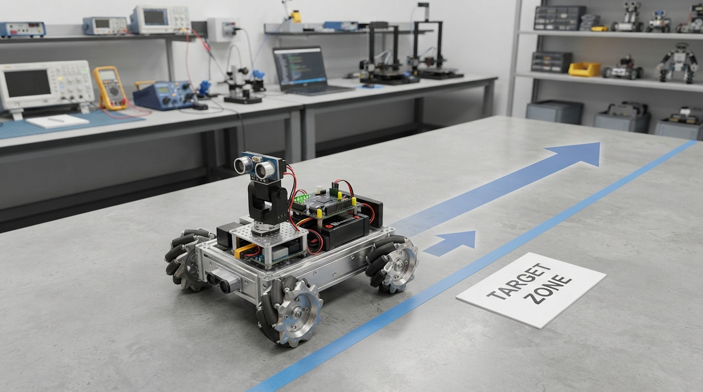

A proportional controller is one of the simplest ways to turn feedback into robot motion: measure the error, multiply it by a gain, and send the result toward the actuator.
In this Professor OS lesson, students:
• calculate P-control commands with physically meaningful units;
• see why larger gain produces stronger responses;
• model actuator saturation with a real command limit;
• compare gains in an executable RoboRover simulation;
• investigate why practical systems may retain a small steady error.
The lesson also makes an important modeling distinction: an ideal velocity-command simulation can show convergence and saturation, but it cannot prove that a real robot will overshoot or oscillate. Those behaviors require actuator dynamics, inertia, delay, or other plant effects.
Try the paper-based gain-and-saturation lab before running the Python program, then change the starting position and predict the first command. What would you add to the model to make its behavior more like a physical robot?
Explore Professor OS: https://connect.vin/professor-os
#Robotics #ControlSystems #Python #EngineeringEducation
In this Professor OS lesson, students:
• calculate P-control commands with physically meaningful units;
• see why larger gain produces stronger responses;
• model actuator saturation with a real command limit;
• compare gains in an executable RoboRover simulation;
• investigate why practical systems may retain a small steady error.
The lesson also makes an important modeling distinction: an ideal velocity-command simulation can show convergence and saturation, but it cannot prove that a real robot will overshoot or oscillate. Those behaviors require actuator dynamics, inertia, delay, or other plant effects.
Try the paper-based gain-and-saturation lab before running the Python program, then change the starting position and predict the first command. What would you add to the model to make its behavior more like a physical robot?
Explore Professor OS: https://connect.vin/professor-os
#Robotics #ControlSystems #Python #EngineeringEducation

Professor OS Class 16: Understanding P Control Through RoboRover
Learn how proportional gain turns position error into a robot command, then test saturation, gain selection, and steady-state error in a runnable RoboRover simulation.